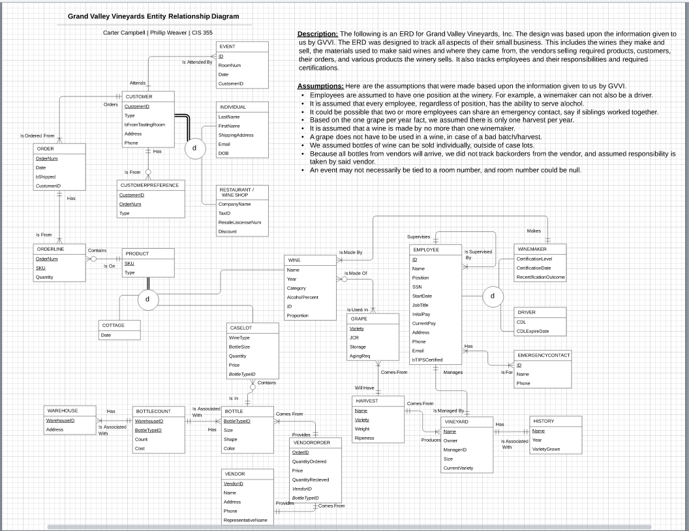

About Me
Hi! I'm Carter Campbell. I am a recent graduate from Colorado State University in the class of 2020 with a Bachelor's of Computer Science. I am an entry level computer scientist looking for my first step in an exciting career in software development and engineering. Right now, I am looking for any job opportunity in the software industry to get my first hands on experience in the world.
My biggest passion outside of software is running. I started running when I was in the eighth grade, and haven’t stopped since. I love spending part of my day out on the roads, trails, or mountains and competing in local road races ranging from 5k to half marathons. Feel free to check out my first ever website I designed from scratch here which is all about my running career.In terms of software, I have a large interest in game development and design. I have been playing games for the better part of my life, and they are what inspired me to pursue game development. Not only do I enjoy games in general, I believe they serve as an escape from the real world, and the hardships it can bring from time to time.
This leads into my passion for software development. Seeing and experiencing the difference that video games can have on an individual, my eyes and mind were opened to the impact technology as a whole can make on our entire society. I realized that I am pursuing this career not because it’s cool, or because it may pay a lot, but because of the difference it can make. From launching rockets and satellites into space, to developing technology to save lives, to simply playing a character in a large open world, technology can make an impact to change people’s lives. I am looking for an opportunity to do just that. Make a real difference in today’s society.
Skills and Abilities
Through my academic career, I have had hands-on experience with many languages in many environments. Here’s what I have to offer:
Languages +
- C/C++
- Java
- SQL
- Python
- HTML & CSS
- Javascript
- React
- Solidity
- Unreal Eninge
Practices +
- Agile Development
- Scrum Environment
- Test Driven Development
- Object Oriented Programming
Communication and Leadership +
- Excellent ability to communicate in a team based environment with experience in scrum development
- Eager to receive feedback for improvement
- Can demonstrate leadership abilities through the experience of section leader in the Windsor High School Marching Band, and working leadership positions
Notable Projects
I have worked on a handful of projects both in and out of school. Here are some selections that are interesting and I am proud of:
Academic Projects
Trip Planning Application


A web application designed to help a non experienced user plan a trip. The application was designed with Javascript and React, and a Java and Node.js backend server to make a full stack. The users were able to enter coordinates, upload a JSON file, view an itinerary containing total mileage and distance between locations, and customize their trip to their own desire. There was also a large focus placed in making the application friendly to users with no technical experience, and having a clean, usable mobile interface.
Ray Tracer
Designed and written from scratch in C++, this ray tracer has the ability to generate photo realistic images. Taking in a driver file specifying camera placement, objects in the scene, and possible textures, photos are generated showing shadows, lighting, objects, and reflection.
Simple Database UI
After fully implementing an SQL relational library database, a simple UI was made to interact with the data. Written in Java, JOptionPane was used to display messages and take input from the user. While the interface itself could have been prettier, the focus was to allow the user to check a book out from one of the several libraries stored on the database. The UI would guide the user through the process, and changes would be made to the database based on the input given.
Winery Database
Only being given a problem description, a database on a local winery was fully implemented. The database was conceptually modeled, logically normalized to third normal form, and implemented on Microsoft SQL Server. Some test data was then entered to ensure business related queries would show the lifecycle of a product to order to invoice, to customer.
Personal Projects
Unreal Engine - Building Escape
Focused on level design, Building Escape presents players with a level based puzzle. Players will have to figure out how to open a door, and keep it open in order to escape to their freedom. This project focused on clever level design, and was mainly built with C++. This was my first project in Unreal Engine and was used to learn the ins and outs of the editor.
Unreal Engine - Battle Tank
Battle Tank was a bit more complex than the previous Unreal Project. This project focused on creating our own custom static meshes and combining them to operate as a single unit. Battle Tank offers an arena style level design, as well as controller support. There is simple AI pathfinding and targeting, and my first attempt at user interface within Unreal.
Unreal Engine - Testing Grounds
Testing Grounds is the most ambitious of the three Unreal Projects. This project is an FPS that has players fight against AI opponents in an endless post-apocalyptic environment to challenge their skills. Testing Grounds has procedurally generated levels, so one arena will be unique from its neighbors. The AI have both vision and sight, and smarter pathfinding so they are always checking where a player might be hiding. There is a simple UI to show players their current health and score, as well as a death animation for an end game experience.
Education
Colorado State University - Bachelor's Degree of Computer Science
Fort Collins, CO | 2017 - 2020
Cumulative GPA: 3.7
Relevant Coursework:
- Intro to Computer Graphics
- Intro to Artificial Intelligence
- Principles of Blockchain
- Statistics
- Software Development
- Algorithms - Theory and Practice
- Database Systems
- Linear Algebra
Work Experience
Through my work experience, I believe I have obtained many skills to be an effective part of your organization. I know how to work as a part of a team. I have excellent communication skills and know how to be a leader. I also know what it means to work towards a goal bigger than myself, and how important it is to be a critical part of the process.
Illegal Pete's - Cook
Fort Collins, CO - July 2019 - Present
Chipotle Mexican Grill - Certified Trainer
Fort Collins, CO - November 2017 - July 2019
Quiznos - Team Leader
Windsor, CO - May 2016 - November 2017
Let's Get In Touch
I'm more than excited to start my career, and I would love to do it with you! In order to get in touch with me, contact me here:
campbellcarter444@gmail.com
Thank you for visiting my website, I hope to hear from you soon!